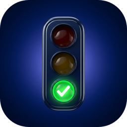

Bir sorunla mı karşılaştın, ya da bir soruda hata mı gördün? Yaz, en kısa sürede dönelim.
E-posta gönderSorular resmî sınav soruları mı?
Hayır. Sorular MEB e-sınav düzenine göre özgün olarak hazırlanır; resmî sınavda çıkan soruların aynısı değildir.
İlerlemem kaybolur mu?
İlerlemen cihazında saklanır. Uygulamayı silersen ilerlemen de silinir.
Pro otomatik yenilenir mi?
Hayır. 1 aylık ve 3 aylık Pro tek ödemedir; süresi bitince kendiliğinden kapanır, iptal etmen gerekmez. Ömür boyu Pro süresizdir ve Aile Paylaşımı ile ailene de açılır.
Ücretsiz sürümde neler var?
Bütün dersler, hikâyeler, günün soruları, konu testleri ve trafik levhaları ücretsizdir. Günde 1 deneme sınavı da ücretsizdir. Pro; sınırsız deneme, zayıf konu sınavı, sınava kadar günlük plan, yanlışlar defteri, kaçırdığın hikâyeler ve sınıfına özel dersleri açar.
Hikâye bildirimlerini nasıl kapatırım?
Profil › Hikâyeler › "Yeni hikâye bildirimleri" anahtarını kapat. Bildirimler günde iki kez, 10.00 ve 20.00'de gelir.
Pro'yu başka cihazda nasıl açarım?
Aynı Apple hesabıyla giriş yap, Profil › Ehliyet Pro › "Satın alımı geri yükle" de.
Bir soruda hata buldum.
Sorunun numarasını ve gördüğün hatayı e-postayla gönder; soruyu inceleyip düzeltiriz. Düzeltmeler uygulama güncellemesi gerekmeden gelir.